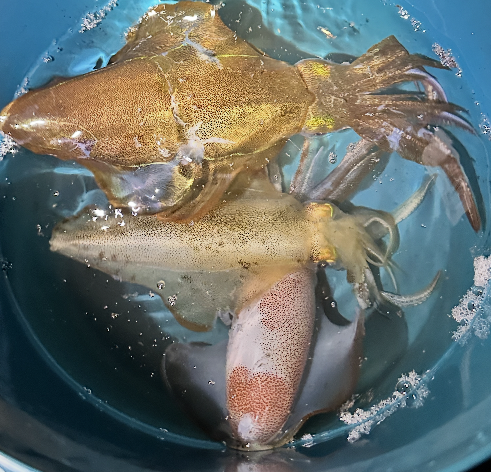
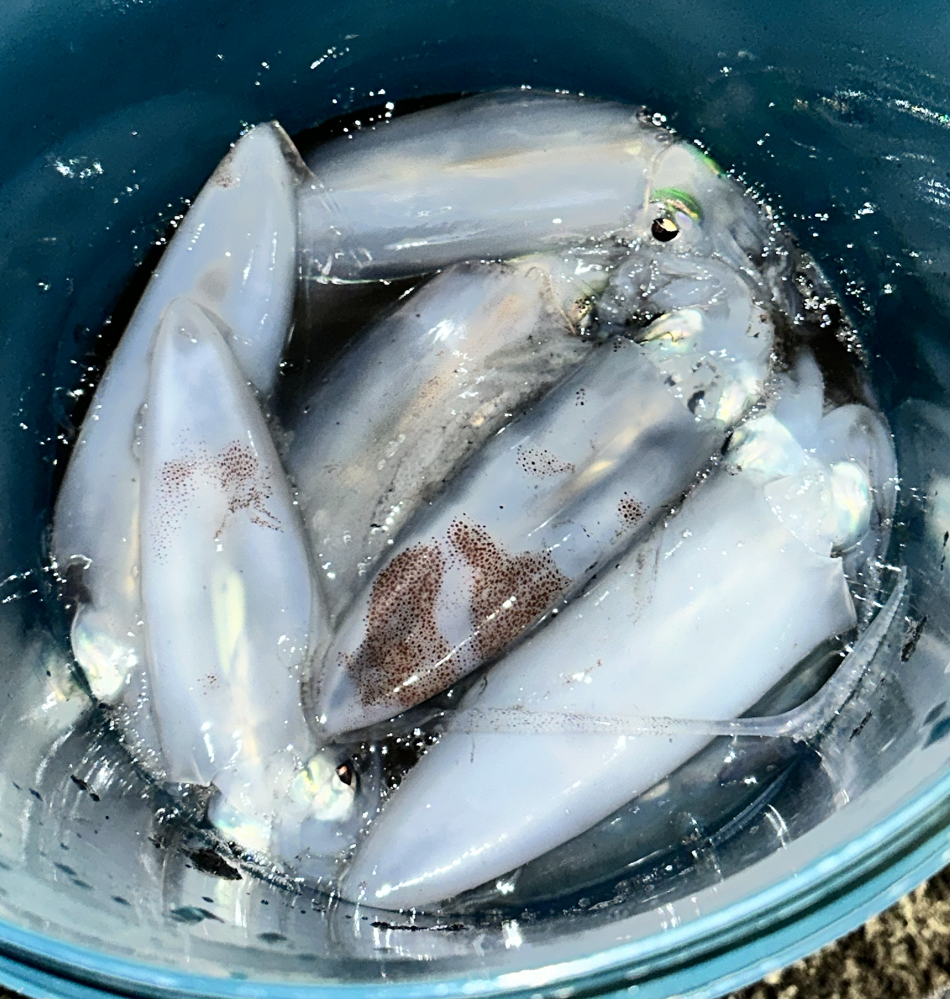
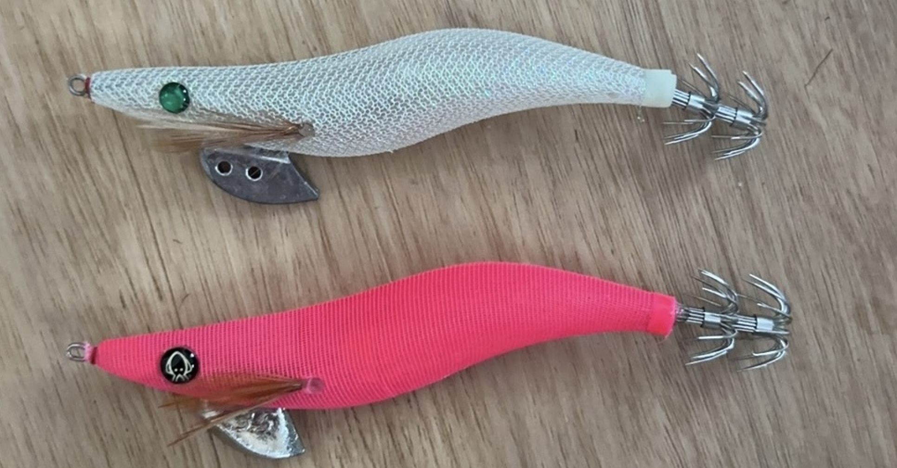

🦑 Recreational Fishing · Victoria, Australia
Southern Calamari (Sepioteuthis australis) is one of Victoria's most fun recreational catches. This visualisation explores where, when, and how often Victorians encounter this remarkable creature — and how citizen science is transforming our understanding of it.
01 — Where to fish
Southern Calamari cluster around Port Phillip Bay, Western Port, and the Mornington Peninsula — all within an hour's drive of Melbourne. Each dot represents a confirmed sighting, coloured by the decade it was recorded. Darker dots are more recent.
The highest concentration of sightings is along the inner bay coastline from Williamstown through to Mornington and Sorrento. These calm, shallow waters with abundant seagrass beds provide ideal feeding grounds for calamari year-round.


Left: Caught at Sorrento. Right: Caught from Mornington. Both caught in May 2026 using a bright 3.5 pink jig.

02 — When to fish
The data tells a clear story: January and February dominate — the warmest summer months consistently produce the most sightings. Summer through autumn is prime time. Summer through autumn is prime time, when water temperatures peak and squid move inshore to feed and spawn.
Winter months (June–August) see far fewer sightings. Calamari move to deeper offshore water in cooler months, making them harder to reach from shore or jetties. September marks the beginning of the spring return.
Monthly sightings across all Australian states. The dark bar highlights March — the peak month for calamari encounters.
Radial chart of Victorian sightings by month. The length of each segment shows relative sighting frequency — March extends far beyond all other months.
Heatmap of Victorian sightings by month and decade. Darker cells = more sightings. Each row is a month; each column is a decade.
Annual Victorian sightings since 2000. The shaded area shows the total volume; the line tracks the trend year by year.
February to April at dawn or dusk, in 2–8 metres of water around seagrass beds, jetty pylons, and rock walls. Jig lures (size 2.0–3.0) in pink or orange outperform bait on most days.
03 — The citizen science boom
Until recently, most calamari records came from scientific trawl surveys. Today, recreational anglers using iNaturalist are the single largest source of Victorian records — transforming what we know about where and when calamari appear.
This shift matters because citizen scientists fish in different places at different times than research vessels. Their records reveal inshore, shallow-water hotspots that trawl surveys miss entirely.
Victorian sightings by data source. iNaturalist (recreational anglers) now rivals the 1990s Port Phillip Bay research program.
Cumulative Victorian sightings since 2000. The curve accelerates sharply after 2019 as iNaturalist adoption grew among Australian anglers.
04 — Victoria vs the nation
With 395 recorded sightings since 2000, South Australia leads all states for Southern Calamari observations, followed closely by New South Wales (349) and Victoria (269). Victoria's sightings are concentrated around the accessible Port Phillip Bay area, making it the most practical state for recreational anglers.
Total sightings per state from Atlas of Living Australia records, 2000–2026.
Annual sightings for the top 3 states since 2015. Each coloured line tracks one state — hover to see exact yearly counts.
05 — Decade by decade
This bubble strip plot shows the distribution of Victorian sightings by month across each decade. Each bubble represents a decade–month combination, and the size shows how many sightings were recorded in that period.
The March dominance is consistent across all decades, but a striking shift has occurred in the 2020s — sightings are now spread across nearly every month of the year, something that was not seen in earlier decades.
Bubble size = number of sightings. Larger bubbles = more sightings in that decade–month combination. Victorian records only, 2000–2026.
06 — About this visualisation
This visualisation combines two publicly available datasets:
All charts were built with Vega-Lite v5. Geographic data simplified using Mapshaper. Data preparation in Python. Generative AI (Claude, Anthropic) was used to assist with code generation and data processing.